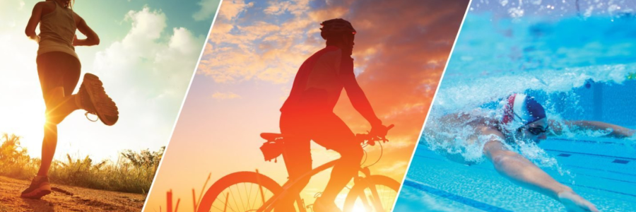

Физическая нагрузка
В современном мире, где большую часть времени мы проводим сидя, физическая нагрузка становится не просто желательной, а жизненно необходимой. Это не просто способ сбросить лишний вес или накачать мышцы, это фундамент нашего физического и психического благополучия.
Почему физическая нагрузка так важна?
- Здоровье сердца и сосудов: Регулярные упражнения укрепляют сердечную мышцу, снижают уровень "плохого" холестерина, улучшают кровообращение и снижают риск развития сердечно-сосудистых заболеваний.
- Контроль веса: Физическая активность помогает сжигать калории, ускоряет метаболизм и способствует поддержанию здорового веса.
- Улучшение настроения и снижение стресса: Во время физ. активности организм вырабатывает эндорфины, которые антидепрессивным эффектом.
- Улучшение когнитивных функций: Исследования показывают, что физические упражнения улучшают память, концентрацию внимания и другие когнитивные функции.
Советы и указания для начала:
- Начните постепенно: Не пытайтесь сразу покорить марафон. Начните с небольших нагрузок, например, с 15-20 минут ходьбы в день, и постепенно увеличивайте интенсивность и продолжительность тренировок.
- Выберите то, что вам нравится: Не обязательно заниматься в тренажерном зале, если вам это не по душе. Найдите вид активности, который приносит вам удовольствие: танцы, плавание, йога, велосипедные прогулки, командные виды спорта – выбор огромен!
- Сделайте физическую активность частью своей повседневной жизни: Поднимайтесь по лестнице вместо лифта, ходите пешком на работу или в магазин.
- Разнообразьте свои тренировки: Чтобы избежать монотонности и задействовать разные группы мышц, чередуйте разные виды активности.
Помните физическая нагрузка – это инвестиция в ваше здоровье и долголетие. Не откладывайте ее на потом, начните прямо сейчас!